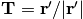
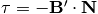

dipy.tracking.metrics¶
Metrics for tracks, where tracks are arrays of points
-
dipy.tracking.metrics.arbitrarypoint(xyz, distance)¶ Select an arbitrary point along distance on the track (curve)
Parameters: xyz : array-like shape (N,3)
array representing x,y,z of N points in a track
distance : float
float representing distance travelled from the xyz[0] point of the curve along the curve.
Returns: ap : array shape (3,)
arbitrary point of line, such that, if the arbitrary point is not a point in xyz, then we take the interpolation between the two nearest xyz points. If xyz is empty, return a ValueError
Examples
>>> import numpy as np >>> from dipy.tracking.metrics import arbitrarypoint, length >>> theta=np.pi*np.linspace(0,1,100) >>> x=np.cos(theta) >>> y=np.sin(theta) >>> z=0*x >>> xyz=np.vstack((x,y,z)).T >>> ap=arbitrarypoint(xyz,length(xyz)/3)
-
dipy.tracking.metrics.bytes(xyz)¶ Size of track in bytes
Parameters: xyz : array-like shape (N,3)
array representing x,y,z of N points in a track
Returns: int : number of bytes
-
dipy.tracking.metrics.center_of_mass(xyz)¶ Center of mass of streamline
Parameters: xyz : array-like shape (N,3)
array representing x,y,z of N points in a track
Returns: com : array shape (3,)
center of mass of streamline
Examples
>>> from dipy.tracking.metrics import center_of_mass >>> center_of_mass([]) Traceback (most recent call last): ... ValueError: xyz array cannot be empty >>> center_of_mass([[1,1,1]]) array([ 1., 1., 1.]) >>> xyz = np.array([[0,0,0],[1,1,1],[2,2,2]]) >>> center_of_mass(xyz) array([ 1., 1., 1.])
-
dipy.tracking.metrics.downsample(xyz, n_pols=3)¶ downsample for a specific number of points along the curve/track
Uses the length of the curve. It works in a similar fashion to midpoint and arbitrarypoint but it also reduces the number of segments of a track.
Parameters: xyz : array-like shape (N,3)
array representing x,y,z of N points in a track
n_pol : int
integer representing number of points (poles) we need along the curve.
Returns: xyz2 : array shape (M,3)
array representing x,y,z of M points that where extrapolated. M should be equal to n_pols
Examples
>>> import numpy as np >>> # a semi-circle >>> theta=np.pi*np.linspace(0,1,100) >>> x=np.cos(theta) >>> y=np.sin(theta) >>> z=0*x >>> xyz=np.vstack((x,y,z)).T >>> xyz2=downsample(xyz,3) >>> # a cosine >>> x=np.pi*np.linspace(0,1,100) >>> y=np.cos(theta) >>> z=0*y >>> xyz=np.vstack((x,y,z)).T >>> xyz2=downsample(xyz,3) >>> len(xyz2) 3 >>> xyz3=downsample(xyz,10) >>> len(xyz3) 10
-
dipy.tracking.metrics.endpoint(xyz)¶ Parameters: xyz : array, shape(N,3) representing the track Returns: ep : array, shape(3,) first track point Examples
>>> from dipy.tracking.metrics import endpoint >>> import numpy as np >>> theta=np.pi*np.linspace(0,1,100) >>> x=np.cos(theta) >>> y=np.sin(theta) >>> z=0*x >>> xyz=np.vstack((x,y,z)).T >>> ep=endpoint(xyz) >>> ep.any()==xyz[-1].any() True
-
dipy.tracking.metrics.frenet_serret(xyz)¶ Frenet-Serret Space Curve Invariants
Calculates the 3 vector and 2 scalar invariants of a space curve defined by vectors r = (x,y,z). If z is omitted (i.e. the array xyz has shape (N,2), then the curve is only 2D (planar), but the equations are still valid.
Similar to http://www.mathworks.com/matlabcentral/fileexchange/11169
In the following equations the prime () indicates differentiation with respect to the parameter of a parametrised curve
 .
.-  (Tangent vector)}
- (Normal vector)
 (Binormal vector)
(Binormal vector) (Curvature)
(Curvature)-  (Torsion)
Parameters: xyz : array-like shape (N,3)
array representing x,y,z of N points in a track
Returns: T : array shape (N,3)
array representing the tangent of the curve xyz
N : array shape (N,3)
array representing the normal of the curve xyz
B : array shape (N,3)
array representing the binormal of the curve xyz
k : array shape (N,1)
array representing the curvature of the curve xyz
t : array shape (N,1)
array representing the torsion of the curve xyz
Examples
Create a helix and calculate its tangent, normal, binormal, curvature and torsion
>>> from dipy.tracking import metrics as tm >>> import numpy as np >>> theta = 2*np.pi*np.linspace(0,2,100) >>> x=np.cos(theta) >>> y=np.sin(theta) >>> z=theta/(2*np.pi) >>> xyz=np.vstack((x,y,z)).T >>> T,N,B,k,t=tm.frenet_serret(xyz)
-
dipy.tracking.metrics.generate_combinations(items, n)¶ Combine sets of size n from items
Parameters: items : sequence
n : int
Returns: ic : iterator
Examples
>>> from dipy.tracking.metrics import generate_combinations >>> ic=generate_combinations(range(3),2) >>> for i in ic: print i [0, 1] [0, 2] [1, 2]
-
dipy.tracking.metrics.inside_sphere(xyz, center, radius)¶ If any point of the track is inside a sphere of a specified center and radius return True otherwise False. Mathematicaly this can be simply described by
 where
where  a point the
center of the sphere and the radius of the sphere.
a point the
center of the sphere and the radius of the sphere.Parameters: xyz : array, shape (N,3)
representing x,y,z of the N points of the track
center : array, shape (3,)
center of the sphere
radius : float
radius of the sphere
Returns: tf : {True,False}
Examples
>>> from dipy.tracking.metrics import inside_sphere >>> line=np.array(([0,0,0],[1,1,1],[2,2,2])) >>> sph_cent=np.array([1,1,1]) >>> sph_radius = 1 >>> inside_sphere(line,sph_cent,sph_radius) True
-
dipy.tracking.metrics.inside_sphere_points(xyz, center, radius)¶ If a track intersects with a sphere of a specified center and radius return the points that are inside the sphere otherwise False. Mathematicaly this can be simply described by
 where
a point the center of the sphere and the radius of the
sphere.
where
a point the center of the sphere and the radius of the
sphere.Parameters: xyz : array, shape (N,3)
representing x,y,z of the N points of the track
center : array, shape (3,)
center of the sphere
radius : float
radius of the sphere
Returns: xyzn : array, shape(M,3)
array representing x,y,z of the M points inside the sphere
Examples
>>> from dipy.tracking.metrics import inside_sphere_points >>> line=np.array(([0,0,0],[1,1,1],[2,2,2])) >>> sph_cent=np.array([1,1,1]) >>> sph_radius = 1 >>> inside_sphere_points(line,sph_cent,sph_radius) array([[1, 1, 1]])
-
dipy.tracking.metrics.intersect_sphere(xyz, center, radius)¶ If any segment of the track is intersecting with a sphere of specific center and radius return True otherwise False
Parameters: xyz : array, shape (N,3)
representing x,y,z of the N points of the track
center : array, shape (3,)
center of the sphere
radius : float
radius of the sphere
Returns: tf : {True,False}
True if track xyz intersects sphere
>>> from dipy.tracking.metrics import intersect_sphere :
>>> line=np.array(([0,0,0],[1,1,1],[2,2,2])) :
>>> sph_cent=np.array([1,1,1]) :
>>> sph_radius = 1 :
>>> intersect_sphere(line,sph_cent,sph_radius) :
True :
Notes
The ray to sphere intersection method used here is similar with http://local.wasp.uwa.edu.au/~pbourke/geometry/sphereline/ http://local.wasp.uwa.edu.au/~pbourke/geometry/sphereline/source.cpp we just applied it for every segment neglecting the intersections where the intersecting points are not inside the segment
-
dipy.tracking.metrics.length(xyz, along=False)¶ Euclidean length of track line
This will give length in mm if tracks are expressed in world coordinates.
Parameters: xyz : array-like shape (N,3)
array representing x,y,z of N points in a track
along : bool, optional
If True, return array giving cumulative length along track, otherwise (default) return scalar giving total length.
Returns: L : scalar or array shape (N-1,)
scalar in case of along == False, giving total length, array if along == True, giving cumulative lengths.
Examples
>>> from dipy.tracking.metrics import length >>> xyz = np.array([[1,1,1],[2,3,4],[0,0,0]]) >>> expected_lens = np.sqrt([1+2**2+3**2, 2**2+3**2+4**2]) >>> length(xyz) == expected_lens.sum() True >>> len_along = length(xyz, along=True) >>> np.allclose(len_along, expected_lens.cumsum()) True >>> length([]) 0 >>> length([[1, 2, 3]]) 0 >>> length([], along=True) array([0])
-
dipy.tracking.metrics.longest_track_bundle(bundle, sort=False)¶ Return longest track or length sorted track indices in bundle
If sort == True, return the indices of the sorted tracks in the bundle, otherwise return the longest track.
Parameters: bundle : sequence
of tracks as arrays, shape (N1,3) ... (Nm,3)
sort : bool, optional
If False (default) return longest track. If True, return length sorted indices for tracks in bundle
Returns :
——— :
longest_or_indices : array
longest track - shape (N,3) - (if sort is False), or indices of length sorted tracks (if sort is True)
Examples
>>> from dipy.tracking.metrics import longest_track_bundle >>> import numpy as np >>> bundle = [np.array([[0,0,0],[2,2,2]]),np.array([[0,0,0],[4,4,4]])] >>> longest_track_bundle(bundle) array([[0, 0, 0], [4, 4, 4]]) >>> longest_track_bundle(bundle,True) array([0, 1])
-
dipy.tracking.metrics.magn(xyz, n=1)¶ magnitude of vector
-
dipy.tracking.metrics.mean_curvature(xyz)¶ Calculates the mean curvature of a curve
Parameters: xyz : array-like shape (N,3)
array representing x,y,z of N points in a curve
Returns: m : float
float representing the mean curvature
Examples
Create a straight line and a semi-circle and print their mean curvatures
>>> from dipy.tracking import metrics as tm >>> import numpy as np >>> x=np.linspace(0,1,100) >>> y=0*x >>> z=0*x >>> xyz=np.vstack((x,y,z)).T >>> m=tm.mean_curvature(xyz) #mean curvature straight line >>> theta=np.pi*np.linspace(0,1,100) >>> x=np.cos(theta) >>> y=np.sin(theta) >>> z=0*x >>> xyz=np.vstack((x,y,z)).T >>> m=tm.mean_curvature(xyz) #mean curvature for semi-circle
-
dipy.tracking.metrics.mean_orientation(xyz)¶ Calculates the mean orientation of a curve
Parameters: xyz : array-like shape (N,3)
array representing x,y,z of N points in a curve
Returns: m : float
float representing the mean orientation
-
dipy.tracking.metrics.midpoint(xyz)¶ Midpoint of track
Parameters: xyz : array-like shape (N,3)
array representing x,y,z of N points in a track
Returns: mp : array shape (3,)
Middle point of line, such that, if L is the line length then np is the point such that the length xyz[0] to mp and from mp to xyz[-1] is L/2. If the middle point is not a point in xyz, then we take the interpolation between the two nearest xyz points. If xyz is empty, return a ValueError
Examples
>>> from dipy.tracking.metrics import midpoint >>> midpoint([]) Traceback (most recent call last): ... ValueError: xyz array cannot be empty >>> midpoint([[1, 2, 3]]) array([1, 2, 3]) >>> xyz = np.array([[1,1,1],[2,3,4]]) >>> midpoint(xyz) array([ 1.5, 2. , 2.5]) >>> xyz = np.array([[0,0,0],[1,1,1],[2,2,2]]) >>> midpoint(xyz) array([ 1., 1., 1.]) >>> xyz = np.array([[0,0,0],[1,0,0],[3,0,0]]) >>> midpoint(xyz) array([ 1.5, 0. , 0. ]) >>> xyz = np.array([[0,9,7],[1,9,7],[3,9,7]]) >>> midpoint(xyz) array([ 1.5, 9. , 7. ])
-
dipy.tracking.metrics.midpoint2point(xyz, p)¶ Calculate distance from midpoint of a curve to arbitrary point p
Parameters: xyz : array-like shape (N,3)
array representing x,y,z of N points in a track
p : array shape (3,)
array representing an arbitrary point with x,y,z coordinates in space.
Returns: d : float
a float number representing Euclidean distance
Examples
>>> import numpy as np >>> from dipy.tracking.metrics import midpoint2point, midpoint >>> theta=np.pi*np.linspace(0,1,100) >>> x=np.cos(theta) >>> y=np.sin(theta) >>> z=0*x >>> xyz=np.vstack((x,y,z)).T >>> dist=midpoint2point(xyz,np.array([0,0,0]))
-
dipy.tracking.metrics.principal_components(xyz)¶ We use PCA to calculate the 3 principal directions for a track
Parameters: xyz : array-like shape (N,3)
array representing x,y,z of N points in a track
Returns: va : eigenvalues
ve : eigenvectors
Examples
>>> import numpy as np >>> from dipy.tracking.metrics import principal_components >>> theta=np.pi*np.linspace(0,1,100) >>> x=np.cos(theta) >>> y=np.sin(theta) >>> z=0*x >>> xyz=np.vstack((x,y,z)).T >>> va, ve = principal_components(xyz) >>> np.allclose(va, [0.51010101, 0.09883545, 0]) True
-
dipy.tracking.metrics.spline(xyz, s=3, k=2, nest=-1)¶ Generate B-splines as documented in http://www.scipy.org/Cookbook/Interpolation
The scipy.interpolate packages wraps the netlib FITPACK routines (Dierckx) for calculating smoothing splines for various kinds of data and geometries. Although the data is evenly spaced in this example, it need not be so to use this routine.
Parameters: xyz : array, shape (N,3)
array representing x,y,z of N points in 3d space
s : float, optional
A smoothing condition. The amount of smoothness is determined by satisfying the conditions: sum((w * (y - g))**2,axis=0) <= s where g(x) is the smoothed interpolation of (x,y). The user can use s to control the tradeoff between closeness and smoothness of fit. Larger satisfying the conditions: sum((w * (y - g))**2,axis=0) <= s where g(x) is the smoothed interpolation of (x,y). The user can use s to control the tradeoff between closeness and smoothness of fit. Larger s means more smoothing while smaller values of s indicate less smoothing. Recommended values of s depend on the weights, w. If the weights represent the inverse of the standard-deviation of y, then a: good s value should be found in the range (m-sqrt(2*m),m+sqrt(2*m)) where m is the number of datapoints in x, y, and w.
k : int, optional
Degree of the spline. Cubic splines are recommended. Even values of k should be avoided especially with a small s-value. for the same set of data. If task=-1 find the weighted least square spline for a given set of knots, t.
nest : None or int, optional
An over-estimate of the total number of knots of the spline to help in determining the storage space. None results in value m+2*k. -1 results in m+k+1. Always large enough is nest=m+k+1. Default is -1.
Returns: xyzn : array, shape (M,3)
See also
From,scipy.interpolate.splevExamples
>>> import numpy as np >>> t=np.linspace(0,1.75*2*np.pi,100)# make ascending spiral in 3-space >>> x = np.sin(t) >>> y = np.cos(t) >>> z = t >>> x+= np.random.normal(scale=0.1, size=x.shape) # add noise >>> y+= np.random.normal(scale=0.1, size=y.shape) >>> z+= np.random.normal(scale=0.1, size=z.shape) >>> xyz=np.vstack((x,y,z)).T >>> xyzn=spline(xyz,3,2,-1) >>> len(xyzn) > len(xyz) True
-
dipy.tracking.metrics.startpoint(xyz)¶ First point of the track
Parameters: xyz: array, shape(N,3) representing the track : Returns: sp: array, shape(3,) first track point : Examples
>>> from dipy.tracking.metrics import startpoint >>> import numpy as np >>> theta=np.pi*np.linspace(0,1,100) >>> x=np.cos(theta) >>> y=np.sin(theta) >>> z=0*x >>> xyz=np.vstack((x,y,z)).T >>> sp=startpoint(xyz) >>> sp.any()==xyz[0].any() True